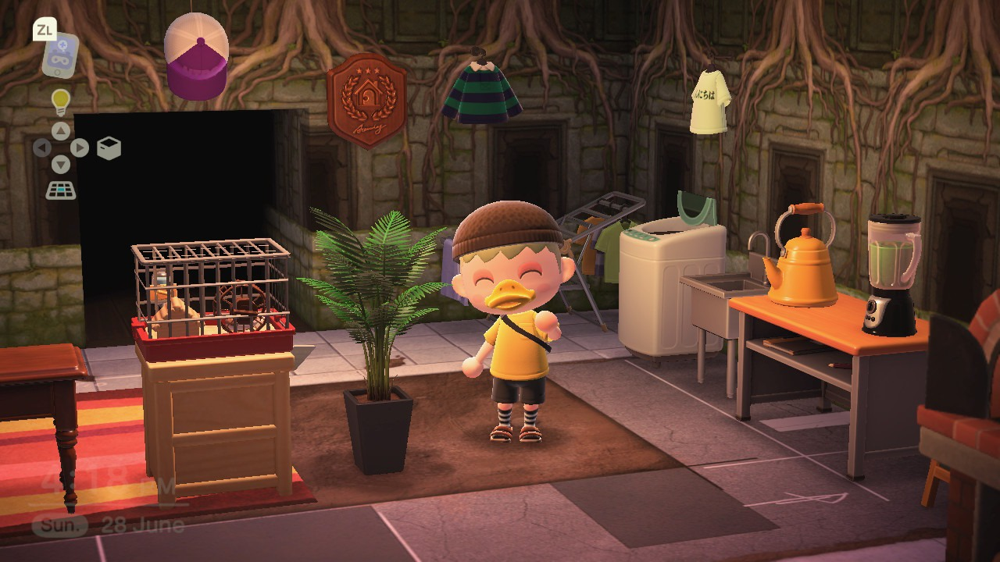
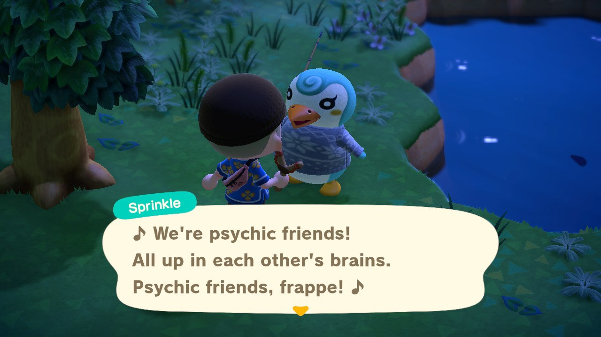
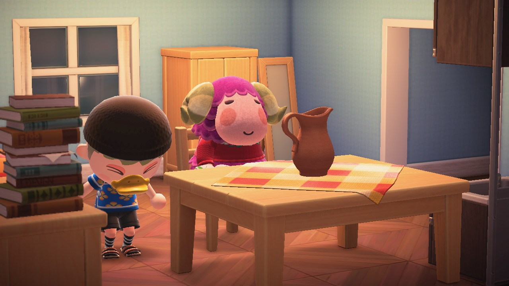
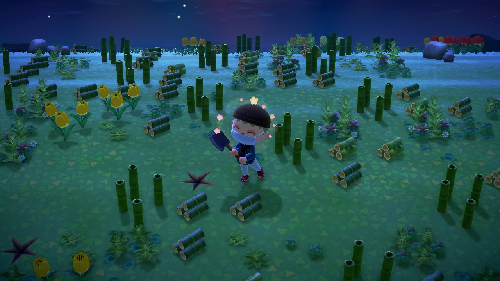
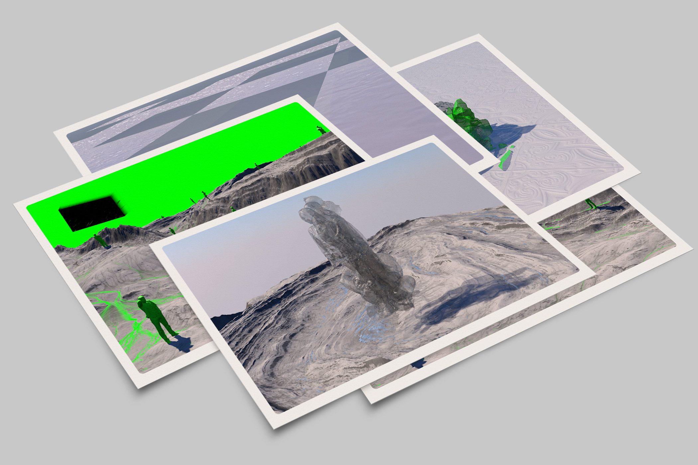
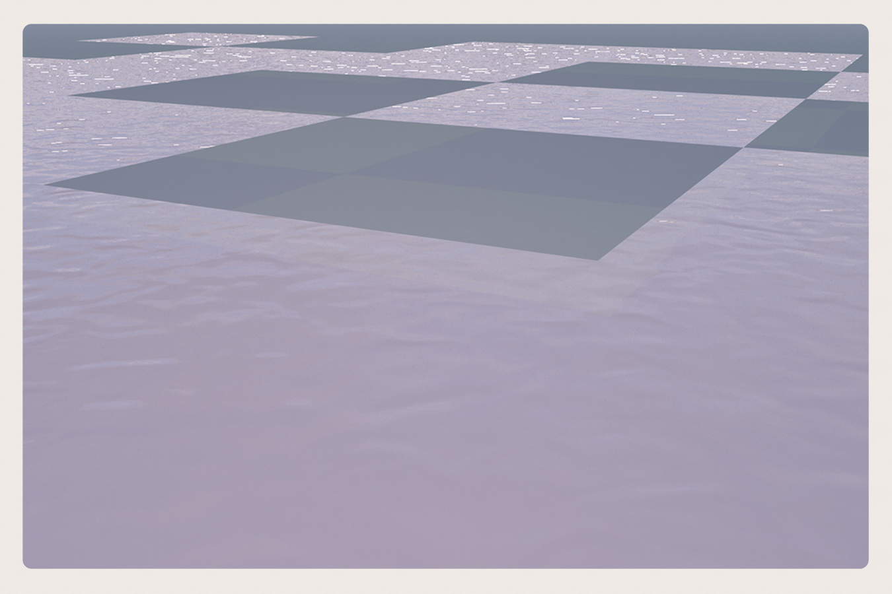
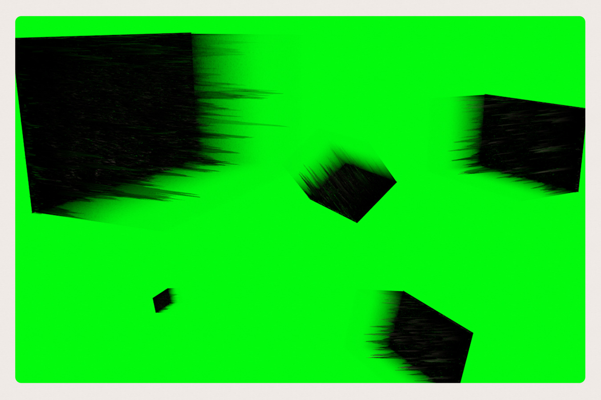
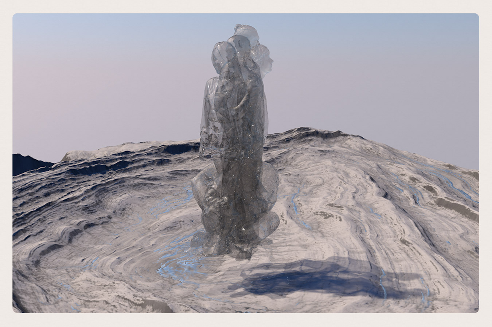
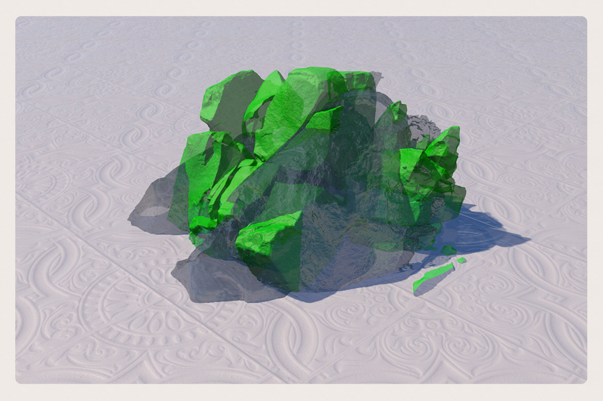

English Original
Passé la quarantaine, les gens se laissent rarement convaincre de quoi que ce soit.
A dix-huit ans, nos convictions sont des collines du haut desquelles nous regardons
le monde; à quarante-cinq, des cavernes où nous nous en cachons.
—Francis Scott Fitzgerald, Bernice se coiffe à la garçonne
Zoe (Laura Haddock):
I reckon I must have lived more in the last 24 hours than in the last 24 years.
—White Lines (Netflix, 2020)
Quando, na série televisiva “White Lines”, a protagonista utiliza na abertura do
primeiro episódio a sinédoque “acho que devo ter vivido mais nas últimas 24
horas do que nos últimos 24 anos” está lançado o mote para uma ideia de
compressão de um tempo e de um espaço narrativo que estabelece uma analogia
com a ideia de vertigem que, de per si, se associa ao desconhecido, ou seja, que
desencadeia uma vontade de arriscar por um território não experienciado: a
viagem.
A viagem é inerente ao humano; a um interesse imediato pela descoberta de
tudo o que o rodeia e que, em períodos de reclusão social, voluntária ou não,
emerge enquanto reduto de liberdade materializado no sonho que tem na
latência entre uma vida alternativa e aquela que se tornou insuportável, a sua
existência. Um sonho que absorve a vida e se alimenta dessa energia acumulada
que se libertará sob a forma de desejo: um sonho chamado desejo que se
transforma em viagem.
A deslocação do sentimento tangível para o abstrato que devolve uma
possibilidade aceitável ao indivíduo constrói um contraponto estimulante às
vidas ufanas repletas de glória. O sonho que possibilita a viagem e se opõe à ideia
de sentido e de razão que parecem inundar um mundo em permanente busca de
respostas missionárias.
As histórias suportadas pelo sonho acompanham a civilização, primeiro
através da oralidade vernacular seguida das primeiras histórias inscritas em
material perene do grego Luciano de Samósata (c. 125-190 d.C.), com
Icaromenipo e Narrativas Verdadeiras. O sonho agregado à viagem e à
tempestade cantada por Ovídio — a “tempestade no mar Adriático” que fora o
seu exílio em Euxino (Tristia I) —, por Homero na Odisseia quando Ulisses parte
de jangada e sofre a investida de Poseidon, no poema épico por Virgílio —
Eneida — que glorifica Roma através da viagem profética de Eneias, mais tarde,
no século XVI, por Camões em Os Lusíadas (1572) e por Shakespeare em A
Tempestade (c. 1610). Embora nestas narrativas estejam presentes aspetos de
representação identitária coletiva, que produzem e difundem uma noção de
pátria e de superação, há um caminho que se abre para o individualismo para o
olhar do indivíduo romântico (avant la lettre) que começa a alimentar a
literatura, a pintura e a escultura, e a compor um admirável mundo novo
estetizado (paisagem) e alterado de acordo com «o gosto pelo particular, pelo
concretismo e pela verdade exterior» (Cabete, 2010: 171).
O fascínio que as famílias nobres detinham desde a Idade Média, por um
novo processo educativo que determinava a existência do peregrinatio
academica, uma espécie de ‘viagem pedagógica’ no âmbito de uma validação
factual do conhecimento adquirido livremente, cujos registos são, depois,
retransmitidos sob a forma de diários, cartas ou narrativas de caráter
autobiográfico, adquire, a partir dos séculos XVI e XVII, um novo interesse pela
necessidade de viajar — o grand tour — dos filhos das classes altas da sociedade
europeia (em especial dos ingleses) para que estes pudessem educar-se em
contacto efetivo com o património artístico do mundo, em especial, o do sul da
Europa (Itália e Grécia), num regresso às viagens pedagógicas. Essas viagens
passaram a ser do interesse dos escritores-viajantes enquanto imperativo
pessoal consignado na exaltação de valores em redor do Eu que impõem a
vivência de um tempo extraordinário de projeção do imaginário de glória
motivada pela queda e emergência dos impérios.
Chegados ao Iluminismo, o ensino e a sociedade sofrem profundas
alterações nos seus arquétipos religiosos e morais, e os modelos pedagógicos e
científicos das universidades passam por um período de valorização dos textos
de viagens testemunhais relativos às narrativas militares (e.g. o domínio
marítimo de Inglaterra, França e Holanda) e religiosas ligadas à expansão do
cristianismo por todo o mundo. Neste período de plena ascensão da burguesia
europeia, que também se efetivava com recurso à cultura literária incrementada
pela impressão de livros e jornais, assistimos ao aparecimento de escritores que,
através do relato das suas viagens e possuídos por uma febre hedonista de
aventura pessoal e política permitiram que os leitores também experimentassem
as mesmas emoções, utilizando as várias possibilidades do registo literário,
desde a epístola à simples notícia.
Do registo literário ao registo pictórico, as paisagens eram trabalhadas
pelos artistas da veduta, como Canaletto ou Panini, no sentido de conferirem aos
sítios retratados uma visão naturalista que absorvia a cultura dos lugares e, deste
modo, despertavam ainda maior curiosidade e paixão pela arte, pela história,
pela ciência, pelo colecionismo, e claro, pela viagem.
Sem nos querermos debruçar sobre especificidades narrativas de viagem,
há um conjunto de escritores-viajantes franceses, como Chateaubriand (Voyage
en Italie, 1849), Stendhal (Promenades dans Rome, 1829) ou Théophile Gautier
(Italie, 1852, e reeditado, em 1875, com o título de Voyage en Italie), que
merecem a nossa atenção pelo lugar escolhido para as suas aventuras
estrangeiras: Itália. Chateaubriand (1768-1848), à semelhança da maioria destes
escritores-viajantes, ao chegar a Roma, em 1803 (num período em que Napoleão
juntou a Itália ao império francês) maravilhou-se com o que o rodeava e com as
diferenças existentes entre França e Inglaterra, para onde tinha fugido aquando
da Revolução francesa. E, de acordo com os ideais românticos e revolucionários,
interessou-se, também, pelas lutas políticas da unificação italiana (anexações
francesas e austríacas).
Mergulhado na melancolia do Eu, num desejo de evasão e numa revolta
interior — «chaque homme porte en lui un monde composé de tout ce qu’il a vu et
aimé, et où il rentre sans cesse, alors même qu’il parcourt et semble habiter un
monde étranger» (Voyage en Italie) —, Chateaubriand soube transmitir aos
leitores, através de alegorias como na tradição literária clássica, esse olhar sobre
o Outro, a beleza das paisagens, a qualidade dos lugares habitados que se
poderiam comparar, em termos de modernidade, com os de Inglaterra, em suma,
o peso das lembranças históricas de Roma, sempre consciente da sua
importância junto do leitor que, apesar de tudo, também aspirava viajar. Por
exemplo, Caspar David Friedrich, na pintura “Der Wanderer über dem
Nebelmeer” (O viajante sobre o mar de névoa), de 1818, procurou que o
observador se colocasse na posição do retratado — do Outro — e partisse numa
viagem ao interior da natureza e das coisas.
Stendhal (1783-1842), um oficial do exército de Napoleão convertido em
cônsul de França e apaixonado pela cultura italiana e pelo grand tour, no livro
Promenades dans Rome, segue os pressupostos formais de um diário de
viajante que descreve o lugar, as gentes e os monumentos da cidade com grande
emoção, embora se saiba que a informação utilizada tivesse sido obtida pela
investigação bibliográfica realizada no período em que esteve em Paris, após a
sua expulsão de Itália, aquando da ocupação austríaca (1821). Passeios de Roma
é efetivamente uma obra de ficção que se tornou muito popular entre os
viajantes pela utilização, por parte do autor, de um estilo literário diferente de
Chateaubriand e, sobretudo, pelo registo crítico da vida social e política do lugar:
«23 juin. — A Rome, il faut, quand on le peut, vivre trois jours dans le monde sans
cesse environné de gais compagnons, et trois jours dans une solitude compléte. Les
gens qui ont de l’âme deviendraient fous s’ils étaient toujours seuls» (Stendhal,
1866: 37).
No que respeita à ‘viagem a Itália’ que Théophile Gautier (1811-1872)
empreendeu em 1850, assiste-se à influência dos escritos de Chateaubriand,
sobretudo na atenção redobrada às belezas naturais das paisagens, desde a Itália
do Norte até Florença. As crónicas publicadas, primeiro, no La Presse e, depois,
no Le Pays, mantiveram, também, a atenção sobre as questões políticas italianas,
como a unificação (risorgimento), o envolvimento de Napoleão III (eleito em
1849) na expulsão dos republicanos em Roma e no apoio ao Papa Pio IX. Estes
factos, aos quais se associa a expulsão dos austríacos de Itália, constituíram-se
como uma ampla matéria sensível para muitos pensadores e escritores franceses
da época, como Alexis de Tocqueville, Alphonse de Lamartine e Victor Hugo,
influenciados por ideias socialistas em voga neste período, contrárias às políticas
conservadoras. Gautier destacou-se no grupo jeune France 1— um conjunto de
jovens intelectuais românticos franceses — muito disponíveis para uma deriva
revolucionária que pressupusesse viajar: «c’est donc reconnaître ou, plus
précisément, retrouver des formes qui élèveront le pays à la dignité de paysage et
accepter par là même que la perception soit prise dans un jeu incessant de
références» (Antoine, 2011: 185).
Deste modo, através do discurso escrito e da produção de imagens,
simultaneamente preparados pelo escritor, que também desenhava, a realidade
natural adquiriu o estatuto de paisagem por assimilação de propriedades
culturais: «le voyage est alors à certains égards un rite de passage permettant
d’intégrer la communauté des poètes: c’est en se mettant à l’écoute de la parole des
autres — mais aussi des merveilles d’une nature que l’art a embellie — qu’il devient
possible de forger sa propre voix, en encourant quelquefois des dangers, toujours en
quittant le cabinet un peu poussiéreux de l’homme de lettres» (idem).
Há também a considerar que a viagem moderna (século XIX) é «uma viagem
que se verticaliza, uma vez que passa a operar-se em termos de interiorização
pessoal, em detrimento dos espaços percorridos nas viagens renascentistas e
posteriores» (Cabete, 2010: 122). A mesma autora esclarece que «o olhar de um
viajante oitocentista desenvolve e fixa uma verdadeira poética da cidade,
projetando a sua atenção, de modo recorrente, para algumas cidades consideradas
míticas» suscitando o interesse de «numerosos escritores, poetas e pintores»
(idem: 212).
Na viragem do século XIX para o XX, surge o cinema — que, desde o seu
início, esteve ligado ao desejo de evasão, de alteridade e à assunção do moderno
— de Georges Méliès (Paris, 1861-1938). O filme A Viagem à Lua (Le Voyage
dans la Lune, 1902) é uma obra de inspiração romântica que, numa primeira
instância, colocou o cinema como uma arte onde as histórias poderão ‘acontecer’
e, no caso específico, possibilitou ao público uma experiência não só inovadora
(apesar de estarem familiarizados 2 com a história de Jules Verne), como
desencadeou o sonho de uma ‘viagem especial’ à Lua perfeitamente enquadrada
no espírito da época (estava-se no virar dos séculos e em plena euforia
tecnológica presente, por exemplo, na Exposição Pan-Americana de Nova
Iorque, em 1901).
Contudo o filme que provoca uma mudança na perceção das diferentes
possibilidades de viagem — desde o grand tour até à viagem literária e artística
— é Viaggio in Italia (1954), de Roberto Rossellini, por se tratar de uma ‘viagem
interior’. A história do filme desenvolve-se em torno de um casal, protagonizado
por Ingrid Bergman (Katherine) e George Sanders (Alex), que faz uma viagem a
Itália para vender a casa de um tio. A sua excecionalidade, amplamente
assinalada por François Truffaut e Eric Rohmer quer na entrevista realizada a
Rossellini nos Cahiers du Cinema 3, em julho de 1954, quer nos textos
publicados, onde os vários colaboradores da revista reconheciam a modernidade
do olhar do realizador italiano como é o caso exemplar da Lettre sur Rossellini,
de Jacques Rivette (Cahiers du Cinema 46, abril de 1955), advém da descoberta
por parte do espectador de uma paleta de sentimentos que ora se escondem, ora
se revelam nesta viagem às profundezas da alma humana entediada.
Rivette 4 reconhece na extensa Lettre a importância de um cinema que
deambula pela complexa natureza das relações pessoais e que devolve ao
espectador um conjunto de ‘quadros’ imperfeitos que este deve procurar
interpretar como se se tratasse de uma pintura, de um poema, ou melhor, de uma
viagem ao seu interior. Nesse sentido, Rivette começa por aludir a Matisse ao
afirmar que «each image, each movement, confirmed for me the secret affinity
between the painter and the film-maker» (idem: 193). O realismo de que fala
Rivette na ‘carta’ obriga-o a referir-se ao modo como Rossellini trabalha as
composições e à presença da ‘mão’ do pintor francês no «his asymmetrism, the
magisterial ‘falseness’ in composition, tranquilly eccentric, which also shocks at
first glance and only subsequently reveals its secret equilibrium where values
are as important as the lines, and which gives to each canvas this unobtrusive
movement […] Matisse and Rossellini affirm the freedom of the artist, but do not
misunderstand me: a controlled, constructed freedom, where the initial building
finally disappears beneath the sketch.» (idem: 194-5)
Essa liberdade controlada e construída referida por Rivette é, como também
já o referimos anteriormente, o reflexo de «people eaten away by lassitude and
boredom, exactly as we know them to be, as the, irefutable, accusing image of our
heteroclite, dissident, discordant societes» (idem: 195) que nos são apresentadas
como um ‘esboço’, como algo imperfeito e incompleto.
Viaggio in Italia é um ensaio sobre as angústias existencialistas que as
imagens da passagem dos personagens por diferentes locais italianos vai
expondo de forma subtil. A sequência da visita de Ingrid ao museu permitiu a
Rossellini explorar o ambiente exterior (as obras expostas), confrontá-lo com a
perturbação interior da personagem em conflito com as suas memórias e,
sobretudo, evocar no espectador a mesma situação, ou seja, uma viagem pela
memória coletiva orquestrada pelas imagens percorridas pela câmera (as das
obras e as da personagem) e pela autorreflexão que decorre do olhar sobre a sua
condição individual.
Agora, o grand tour já não se faz calcorreando os lugares históricos e
registando os momentos singulares, porque a viagem num mundo em ruínas (a
sequência no filme da visita a Pompeia introduz um tempo passado que
cristalizou e que não pode ser desenterrado) só poderá ser feita em estado de
recuperação da memória que ajude a ultrapassar uma determinada vivência
trágica. No presente, essa viagem através da literatura e da arte, porque só elas
conseguem ultrapassar a tragédia humana, impondo uma modernidade que
nasce do interior das pessoas pela reconfiguração da sua nova existência, a
quietude e o tédio encaminham-nos para o desterro que, tal como aconteceu a
muitos autores exilados (e.g. Andrei Tarkovski 5, de 1982 a 1986, em Itália),
permitirá iniciar uma nova viagem aos confins do mundo e, para tal, como disse
um dia Jean-Luc Godard, a propósito de Roma, città aperta (Roberto Rossellini,
1945), todas as estradas vão dar a Roma. Comecemos a nossa viagem por aí.
NOTAS
1 Por sua vez, surge em Paris um movimento semelhante — Giovanne Italia — formado por Giuseppe Mazzini (1805-1872), constituído por jovens exilados, e inspirado nos ideais liberais e revolucionários a aplicar em Itália.
2 Também H. G. Wells começa a publicar, de 1900 a 1901, na The Strand
Magazine a novela científica The First Men in the Moon que viria a ser
adaptada para filme só em 1964, com realização de Nathan Juran.
3 A revista é fundada por André Bazin e integra um grupo de jovens
intelectuais franceses que anos depois viriam a pertencer à nouvelle vague.
4 «If I consider Rossellini to be the most modern of film-makers, it is not
without reason; nor is it through reason, either. It seems to me impossible to
see Viaggio in Italia without receiving direct evidence of the fact that the film
opens a breach, and that all cinema, on pain of death, must pass through it.
(Yes, that there is now no other hope of salvation for our miserable French
cinema but a healthy transfusion of this young blood)» (Hillier, 1985: 192)
5 Tarkovski filma no exílio italiano um dos seus filmes mais autobiográficos –
Nostalgia, 1983 – também ele passado entre ruínas (Toscânia).
Passé la quarantaine, les gens se laissent rarement convaincre de quoi que ce soit. A dix-huit ans, nos convictions sont des collines du haut desquelles nous regardons le monde; à quarante-cinq, des cavernes où nous nous en cachons.
—Francis Scott Fitzgerald, Bernice se coiffe à la garçonne
Zoe (Laura Haddock):
I reckon I must have lived more in the last 24 hours than in the last 24 years.
—White Lines (Netflix, 2020)
When, in the television series White Lines, the protagonist uses the synecdoche «I think I must have lived more in the last 24 hours than in the last 24 years» in the opening of the first episode, the motto for an idea of compression of a time is launched and of a narrative space that establishes an analogy with the idea of vertigo that, in itself, is associated with the unknown, that is, that triggers a willingness to expose oneself to risk for the sake of an unexperienced territory: the journey.
Travelling is inherent to human nature; to an immediate interest in the discovery of everything that surrounds him and that, in times of social confinement—whether voluntary or not—, emerges as a stronghold of freedom materialised in the dream one has in the latency between an alternative life and one that has become unbearable, one’s own existence. A dream that absorbs life and feeds on this accumulated energy that will be released in the form of desire: a dream called desire that turns into a journey.
The displacement of the tangible feeling towards the abstract that returns an acceptable possibility to the individual builds a stimulating counterpoint to proud lives full of glory. The dream that makes travelling possible and opposes the idea of meaning and reason that seem to flood a world in constant search for missionary responses.
The histories supported by the dream accompany civilisation, firstly through vernacular orality following the first histories inscribed in the perene work of the Greek Luciano de Samósta (circa 125-190 a.C.), with Icaromenippus and The True Stories. The dream attached to the journey and the storm sung by Ovid—the “storm in the Adriatic sea” that was his exile in Euxino (Tristia I)—, by Homer in Odyssey when Ulysses sets off on a raft and suffers Poseidon's onslaught, in the epic poem by Virgil—Aeneid—which glorifies Rome through the prophetic journey of Aeneas, later, in the 16th century, by Camões in Os Lusíadas (1572) and by Shakespeare in The Tempest (c. 1610). Although in these narratives aspects of collective identity representation are evident, which produce and disseminate a notion of homeland and overcoming, there is a path that opens up to individualism, to the look of the romantic individual (avant la lettre) that begins to feed literature, painting and sculpture, composing an admirable new aestheticised world (landscape) and altered according to «the taste for the particular, for concretism and for the external truth» (Cabete, 2010: 171).
The fascination that noble families have held since the Middle Ages, due to a new educational process that determined the existence of peregrinate academica, a kind of 'pedagogical trip' aimed at the factual validation of the knowledge acquired freely, whose records are then relayed in the form of diaries, letters or narratives of an autobiographical character. Such noble families acquire, from the 16th and 17th centuries, a new interest in the need to travel—the grand tour—of the children of the upper classes of European society (especially the English) so that they could educate themselves in effective contact with the artistic heritage of the world, especially that of southern Europe (Italy and Greece), in a return to educational trips. These trips became of interest to the traveling writers as a personal imperative enshrined in the exaltation of values around the Self that impose the experience of an extraordinary time of projection of the imaginary of glory motivated by the fall and emergence of empires.
In the age of Enlightenment, education and society undergo profound changes in their religious and moral archetypes, and the pedagogical and scientific models of universities go through a period of appreciation of testimonial travel texts related to military narratives (e.g. the maritime domain of England, France and Holland) and religious ones linked to the expansion of Christianity throughout the world. In this period of extensive rise of the European bourgeoisie, which was also carried out with recourse to literary culture increased by the printing of books and newspapers, we witness the appearance of writers who, through the account of their travels and possessed by a hedonistic fever of personal and political adventure, allowed readers to also experience the same emotions, using the various possibilities of literary record, from the epistle to the simpler news articles.
From the literary to the pictorial record, the landscapes were executed by the artists of veduta, such as Canaletto or Panini, in order to give the portrayed sites a naturalistic vision that absorbed the culture of the places and, thus, aroused even greater curiosity and passion for art, history, science, collecting, and of course, for travel.
Without dwelling on the specific narratives of travel, there is a group of French travelling-writers, such as Chateaubriand (Voyage en Italie, 1849), Stendhal (Promenades dans Rome, 1829) or Théophile Gautier (Italie, 1852, reedited in 1875 and entitled Voyage en Italie), which deserve our attention for the place chosen for their foreign adventures: Italy. Chateaubriand (1768-1848), like most of these travelling writers, upon arriving in Rome in 1803 (a time when Napoleon joined Italy with the French empire) marvelled at the surroundings and the differences between France and England, where he had fled to during the French Revolution. And, according to the romantic and revolutionary ideals, he was also interested in the political struggles of Italian unification (French and Austrian annexations).
Delving into the melancholy of the Self, in a desire for evasion and an inner revolt—«each man carries within him a world made up of all that he has seen and loved, and into which he returns constantly, even as he travels and seems to live in a foreign world» (free translation, Voyage en Italie, 1875)—, Chateaubriand was able to convey to readers, through allegories as in the classic literary tradition that characteristically look at the Other, the beauty of the landscapes, the quality of the inhabited places that could be compared in terms of modernity, with those of England, and in short, the weight of historical memories of Rome, always aware of its importance with the reader who, despite everything, also aspired to travel. For example, Caspar David Friedrich, in the painting Der Wanderer über dem Nebelmeer (Wanderer above the Sea of Fog), from 1818, tried to get the observer to put himself in the position of the person portrayed—of the Other—and set out on a journey into the interior of nature and things.
Stendhal (1783-1842), an officer in Napoleon's army converted to consul of France and passionate about Italian culture and the grand tour, in the book Promenades dans Rome, follows the formal assumptions of a traveler's diary describing the place, the people and the monuments of the city with great emotion—although it is known that the information used had been obtained by the bibliographic investigation carried out during the period in which he was in Paris, after his expulsion from Italy, during the Austrian occupation (1821). Promenades dans Rome is effectively a work of fiction that has become very popular with travellers because of the author's use of a different literary style than Chateaubriand and, above all, for the critical record of the social and political life of the place: «June 23. - In Rome, you must, when possible, live three days in the world constantly surrounded by cheerful companions, and three days in complete solitude. People with a soul would go crazy if they were always alone» (free translation, Stendhal, 1866: 37).
Regarding the 'trip to Italy' that Théophile Gautier (1811-1872) undertook in 1850, the influence of Chateaubriand's writings is rather evident, especially in the increased attention to the natural beauty of the landscapes, from Northern Italy to Florence. The chronicles published, first, in La Presse and, later, in Le Pays, also kept the attention on the Italian political questions, like the unification (risorgimento), the involvement of Napoleon III (elected in 1849) in the expulsion of the republicans in Rome and in support of Pope Pius IX. These facts, which are associated with the expulsion of Austrians from Italy, constituted themselves as ample sensitive subject for many French thinkers and writers of the time, such as Alexis de Tocqueville, Alphonse de Lamartine and Victor Hugo, influenced by socialist ideas in vogue in this period, contrary to conservative policies. Gautier stood out in the jeune France 1—a group of young French romantic intellectuals—readily available for a revolutionary drift that presupposed travel: «It is therefore to recognize or, more precisely, to rediscover forms that will elevate the country to the dignity of a landscape and thereby accept that perception is taken in an incessant game of references» (free translation, Antoine, 2011: 185).
In this way, through written discourse and the production of images, simultaneously prepared by the writer who also drew, natural reality acquired the status of landscape by assimilation of cultural properties: «the journey is then in some respects a rite of passage allowing to integrate the community of poets: it is by listening to the words of others - but also to the wonders of nature that art has embellished - that it becomes possible to forge your own voice, sometimes incurring dangers, always leaving the somewhat dusty office of the man of letters» (free translation, idem).
It is also important to consider that the modern trip (19th century) is «a trip that becomes vertical, since it starts to operate in terms of personal interiorization, to the detriment of the physical spaces covered in the trips in the Renaissance and later» (free translation, Cabete, 2010: 122). The same author clarifies that «the look of a 19th century traveler develops and fixes a true poetics of the city, projecting his attention, repeatedly, to some cities considered mythical», raising the interest of «numerous writers, poets and painters» (free translation, idem : 212).
In the turn of the 19th to the 20th century, cinema of Georges Méliès (Paris, 1861-1938) emerged—which, since its beginning, was linked to the desire for evasion, alterity and the assumption of the modern. The film A Trip to the Moon (Le Voyage dans la Lune, 1902) is a work of romantic inspiration that, in the first instance, placed cinema as an art where stories can 'happen' and, in the specific case, enabled the public to not only an innovative experience (although they are familiarised 2 with the story of Jules Verne), as they triggered the dream of a 'special trip' to the Moon, perfectly framed in the spirit of the time (it was at the turn of the centuries and in full technological euphoria present, for example, at the New York Pan American Exhibition in 1901).
However, the film that causes a shift in the perception of different travel possibilities—from the grand tour to the literary and artistic trip—is Viaggio in Italia (1954), by Roberto Rossellini, as deals with an ‘interior trip’. The story of the film is developed around a couple, carried out by Ingrid Bergman (Katherine) and George Sanders (Alex), that makes a trip to Italy to sell the house of an uncle. Its exceptionality, widely noted by François Truffaut and Eric Rohmer both in the interview with Rossellini at the Cahiers du Cinema 3, in July 1954, and in the published texts, where the various collaborators of the magazine recognised the modernity of the Italian director's regard as it is exemplary case of Lettre sur Rossellini, by Jacques Rivette (Cahiers du Cinema 46, April 1955), comes from the viewer's discovery of a palette of feelings that are sometimes hidden, sometimes revealed in this journey to the depths of the bored human soul.
Rivette 4 recognises in the extensive Lettre the importance of a cinema that wanders through the complex nature of personal relationships and that returns to the viewer a set of imperfect 'pictures' that he must try to interpret as if it were a painting, a poem, or rather, a trip to its interior. In this sense, Rivette begins by alluding to Matisse by stating that «each image, each movement, confirmed for me the secret affinity between the painter and the film-maker» (idem: 193). The realism that Rivette speaks of in the 'letter' obliges him to refer to the way Rossellini works with compositions and the presence of the French painter's 'hand' in «his asymmetrism, the magisterial 'falseness' in composition, tranquilly eccentric, which also shocks at first glance and only subsequently reveals its secret equilibrium where values are as important as the lines, and which gives to each canvas this unobtrusive movement […] Matisse and Rossellini affirm the freedom of the artist, but do not misunderstand me: a controlled, constructed freedom, where the initial building finally disappears beneath the sketch.» (idem: 194-5)
This controlled and constructed freedom referred to by Rivette is, as already mentioned, the reflection of «people eaten away by lassitude and boredom, exactly as we know them to be, as the, irrefutable, accusing image of our heteroclite, dissident, discordant societies» (idem: 195) that are presented to us as a 'sketch', something imperfect and incomplete.
Viaggio in Italia is an essay on the existentialist anxieties that the images of the characters' passage through different Italian locations carefully expose in a subtle way. The sequence of Ingrid's visit to the museum allowed Rossellini to explore the outside environment (the exhibited works), confront him with the character's inner disturbance in conflict with her memories and, above all, evoke the same situation in the spectator. That is, a journey through the collective memory orchestrated by the images traveled by the camera (those of the works and those of the character) and the self-reflection that arises from looking at their individual condition.
Now, the grand tour is no longer done by walking around the historical places and recording the singular moments, because the journey in a world in ruins (the sequence in the film of the visit to Pompeii introduces a past time that is crystallised and thus that cannot be dug up) can only be done in a state of memory recovery that helps overcome a certain tragic experience. In the present, this journey through literature and art—because only they can overcome the human tragedy, imposing a modernity that is born from the interior of people through the reconfiguration of their new existence, the stillness and boredom lead us to the exile that, as happened to many exiled authors (e.g. Andrei Tarkovski 5, from 1982 to 1986, in Italy)—, will allow us to start a new journey to the ends of the world and, for that, as Jean-Luc Godard once said regarding Roma, Città Aperta (Roberto Rossellini, 1945), all roads lead to Rome. Let's start our journey there.
NOTES
1In turn, a similar movement arises in Paris—Giovanne Italia—formed by Giuseppe Mazzini (1805-1872), made up of young exiles, and inspired by the liberal and revolutionary ideals to be applied in Italy.
2G. Wells also began to publish, from 1900 to 1901, in The Strand Magazine the scientific novel The First Men in the Moon, which would be adapted for film only in 1964, by Nathan Juran.
3The magazine is founded by André Bazin and composes a group of young French intellectuals who years later would belong to the nouvelle vague.
4«If I consider Rossellini to be the most modern of film-makers, it is not without reason; nor is it through reason, either. It seems to me impossible to see Viaggio in Italia without receiving direct evidence of the fact that the film opens a breach, and that all cinema, on pain of death, must pass through it. (Yes, that there is now no other hope of salvation for our miserable French cinema but a healthy transfusion of this young blood)» (Hillier, 1985: 192)
5Tarkovski films one of his most autobiographical films—Nostalgia, 1983—in Italian exile, also spent among ruins in Tuscany.
REFERENCES
Antoine, Philippe. (2011). Quand le voyage devient promenade: écritures du voyage au temps du romantisme. Paris: Presses Paris Sorbonne.
Cabete, Susana. (2010). A narrativa de viagem em Portugal no século XIX: alteridade e identidade nacional. Litérature. Paris: Université de la Sorbonne Nouvelle – Paris III. Retrieved here.
Hillier, Jim. (1985). Cahiers du Cinema. The 1950s: Neo-Realism, Hollywood, New Wave. Cambridge, Massachusetts: Harvard University Press.
Stendhal, Henry Beyle. (1866). Promenades dans Rome. Paris: La Librairie Nouvelle.
Victor M. Almeida Professor at the Faculty of Fine Arts of Lisbon.
Sofia Cavaquinho
Catharsis is by definition a kind of purge. An emotional one that is meant to purify and cleanse. It is the physical sensation of relief through expulsion going through the body. To experience catharsis means to restore through powerful use of emotional play. Maybe one could affirm that the experience of a global pandemic is analogous to that of catharsis. The constant contrast between trauma and relief as both devastating and hopeful news and events are displayed for the whole world surely would make it fitting for this analogy. But although it ticks every checkbox of an Aristotelian definition, it doesn’t quite do the same in mine. The gratification that ensues a cathartic experience is simply not there. It may be because this situation is just dragging itself indefinitely, and us with it. But there is no doubt that a sense of catharsis is very much necessary when amidst a global emergence with no end in sight, and thus I propose not a redefinition but an expansion of how a catharsis could ensue.
Maybe it could be softer and warmer. Maybe gentleness is the cathartic state we must achieve at this moment as the play of emotions has gone too far. The very same hard lines that defined the commonsensical rules on how to behave for your and everyone else’s best interest have become blurred and undefined. As the terms confinement and desconfinement make their way into our daily vocabulary, it is becoming hard to discern on how we should act and behave. Our connection with the outside world remains now in this shaky realm of what is appropriate, and deciding on common actions like “Should I go for a walk?” or “Is it okay to grab a beer with a friend?” is actually daunting. This small gateway to reality has opened up once again, but making the decision to cross it is actually the hard part.
This quarantine was for many marked by a constant need to be able to connect in alternative ways that could somehow replace the “old ways”. The need to connect is still a thing and trying to reach out for ways to do it without making the full commitment to go back to real life is not only a smart move but also a necessity. However, the “new normal” can’t happen without compromise, and for many—if not for all—, this compromise means discomfort, loneliness and a rut. And these moods and states of being that have made their way onto our confined existence are in a need of a great purge, thus the need to expand the meaning of a cathartic state. I don’t think anyone could benefit from emotional distress at this moment so maybe this restoration could take a lighter note.
Being connected into a digital framework is a valid way to ensure engagement and relationships in a world that somewhat still feels a little bit real. But what many of those frameworks are lacking is a straightforward connection to the mundane life and its small and obvious struggles. And although they provide a nice source of momentarily escapism, it isn’t really a sustainable concept of “Elsewhere”. But fear no more — I (and about half of the whole world population) have discovered a coping mechanism that actually really helps to stay afloat and in sync with the boring and very much real daily routines, and it comes in the shape of a (supposedly but not really) children-targeted videogame: Animal Crossing.
Did I just try to awkwardly sell a Nintendo franchise as hardcore greek philosophy so this doesn’t look like yet another Animal Crossing circlejerk piece? Maybe. But this comparison isn’t that farfetched. Animal Crossing is the gentle and slow-release catharsis that shaped my and many others' quarantine and return to real life. I spent 2 months quarantined in the countryside, and although I had more freedom than most to roam around and live my best “country mouse” life, I did not take part in it. I spent most of the time discouraged and paranoid and, honestly, as the whole world shut down there was not much sense in going out besides to buy groceries to make my weekly attempt at what would always turn out to be burnt brownies. So this game really helped me to bring the outside to the inside of my home, as I was irl living (or more like hiding to be honest) in a small village connected to nature and its tending, but wasn’t really being able to enjoy as I should.
The premise of the game is: your avatar is dropped in a deserted island run by a tycoon who owns the slickest cuban shirts, with the help of his nephews. Together, you must develop the island, build infrastructures, better your home and invite other villagers to live alongside you. So basically you spend all your time chopping wood, fishing and picking fruit—it’s all about that humble lifestyle. The thing about this simulation is that it is not only realistic in its responsibilities (much needed), but also whimsical. It's escapism quality relies on providing a mirror of real life with the exception that everything is mellower and slow paced. A simple way of life that many would envy after this pandemic. You make your own style of playing to better suit your needs and there is no rush. As the game follows your geographical timeline it also encourages you to only play for a couple hours, do the tasks you think you ought to do and get that sense of accomplishment of a hard day spent on physical labour. The lack of linearity and the ability to tailor the game to the way each one wants to play it brings it even closer to real life. As there is no ultimate goal involved, but a series of small tasks that you make for yourself.
Its characteristic gentleness is what really makes it cathartic. You chip at it a little bit, completing small tasks until a big goal is achieved, but there is no pressure to complete anything whatsoever. And a few weeks later you have this whole world that you have developed physically and socially, and that development doesn’t stop until you decide to stop playing. Thus, the sense of purge and catharsis comes through being in control. There is no consensus on when we are getting our real world "under control" again, or if it's even possible to do so, but this little experience of being elsewhere that you have built, that is all yours to shape as you wish, provides a sense of relief that has been stolen alongside our freedom.
The sense of normalcy provided by this life simulator comes from this sense of stability that is automatically offered if you work hard enough, and it is honestly ironic when seen in juxtaposition with the current situation. Animal crossing is like simplified real life, wrapped in a security blanket where nothing bad could happen—besides a few wasps and spider bites. And even if it mirrors a few real life situations that aren’t exactly pleasant,like taking massive loans to pay for your house upgrades, you could just choose to ignore it and live on a tent or chip away at it slowly with no set interest or time frame—capitalism could never. It is nice to know that at least in this alternate reality I can own a house. The ideal of a small closed community, a thriving society built upon honest work, or the idea of development and evolution in a goal oriented way is honestly soothing in a time like this, where you can’t really accomplish that much, nor have very bright hopes for the future as political and economical structures are crumbling.
Besides the focus on the hustle to get your Island to a 5 star rating, there is a whole another aspect of this video game that was and still continues to be detrimental in this time frame, that is, the game is a greatly developed social tool in several aspects. It can be used as an alternative way to stay in touch with your friends or meet online strangers as you can visit (and trash) their islands, and they can do the same with yours, as well as items and a few interactions can also be exchanged. But besides those very fruitful interactions this game, as many others, also includes a way of building relationships that points in the direction of what socializing in confinement can look like: and that is in the form of parasocial relationships.
Parasocial relationships are characterized first and foremost by being exclusively one sided even when it doesn’t seem like it, but also by a lack of a truly human connection. They are not controlled by the avatar or the player but by the entity they are trying to connect to. It isn’t possible to mutually develop a parasocial relationship as the avatar can only participate in it, and not change it. In Animal Crossing those take the form of the villagers you choose to live amongst. They usually have a defining trait to their personality which drives the interaction with you, the player and it usually is a jock hyperactive kind of persona, a motherly one, a cheeky one or an arrogant one. And these strong traits combined with their appearance make for really lovable and desirable characters—because this game is CUTE. All capitals deserved. Actually I can’t remember a single instance where anthropomorphic animals haven’t been an huge hit, so Animal Crossing is surely a safe bet.
Interestingly enough, there are actually online communities that rank these villagers in desirability with a whole gaming black market destined to trade and sell villagers. So it is possible to see the level of involvement that the players have with this world and its characters. In a reality that has become increasingly lonely, it is nice to be able to interact with several beings, even if they are some kind of bot. It doesn’t really matter though, because they’re part of your virtual world and that gives them some kind of humanity that is both warm and appreciated at a time where social activity has been hindered.
In this aspect Animal Crossing shows that a parasocial relationship doesn’t have to be an unhealthy or obsessive one, but rather, it can be a kind and nice and cathartic way to have some fun interaction and feel some kind of control, even if it’s not exactly real. This video game launch date truly has become one of the most fruitful coincidences I have ever witnessed. Maybe I am attributing too much importance to it, but at its core, it kind of represents everything that this pandemic has taken away from us. And with its sweet and gentle nature, it is an alternative to cope, connect and to be able to grow and develop an escape place where there seemed to be none.




Manuel Silva

With the current digitization of every single aspect of our lives, people have found new ways of interacting that don't demand physical proximity. We have found comfort in seeping through the screen into a boundless world that links millions of people together in a virtual community capable of rapid exchange of ideas, a free sense of identity; overall, a place of escapism. It seems that social confinement has served as a propeller to highlight this new age migration to the cyberspace.However, to say that this shift is caused by the current situation is somewhat naive, since it has been occurring through the course of the last few years.With that said, the lockdown has unequivocally made these issues clearer than ever, since they now are an imposition on the way we socialize.
These postcards are a reflection of the digital spaces that we have chosen to move to. A concrete piece of these infinite, intangible, virtually rendered environments that we travel to when the physical spaces we inhabit are not an option. In them, it’s depicted the utopian landscapes of a ‘server like’ space that serves as a mediator to our contemporary relationships.




Mariana Cordeiro
Keywords: travel dephysicatization; non-places; cybertourism; digital landscapes; virtual circulation; cyber identities; life simulation.
The Global Soul: Jet Lag, Shopping Malls and the Search for Home (2001), a book written by the british essayist Pico Iyer, explores Marshall McLuhan’s global village definition and how time acceleration characterized it through technology, recounting the contemporary experience of living in a borderless world where “everywhere is made up of everywhere else” (Iyer, 2000: 11) Iyer’s point of view reinforces Manuel Castells’s characterization of the current network society: “a society whose social structure is made up of networks powered by micro-electronics-based information and communications technologies.” (Castells, 2004: 3) The current digitalization of the world defines our current reality: a fusion of Iyer and Castells ideas, an omnipresent connected society.
David Holmes wrote about the dephysicalization of travel in Virtual Globalization: Virtual Spaces/ Tourist Spaces (2001), introducing Marc Augé's notion of non-places: public commonplaces reproduced worldwide without a historical purpose, outlining what is known as a transitional space. “They are places of ephemerality which have no history, and little that can be related to at a physical level” (Augé, 1995: 77-8). The modernized architecture implied by the social purpose of its construction is also a characteristic of the broad structure of such non-places.
“Non-places can be easily be identified by the fact that they can’t be photographed. That is to say, in a culture in which, as Susan Sontag suggests, ‘everything exists to end in a photograph’(Sontag, 1979: 24), non-places are remarkable for their placelessness.” (Holmes, 2001: 28)
Holmes brings up another non-place identification method: its compatibility/commodity to flânerie, in other words, to travel. Walter Benjamin’s interpretation of Charles Baudelaire’s poetry coined the 19th century definition of flâneur as “stroller”, someone who wondered with no aim but to experience the city detached from any intrinsic values of consumerism and capitalism, a posture much lost in today’s world. This spontaneous alienist stance towards the public sphere contrasts with Susan Buck-Morss’s 20th century “advertisement-consumer” flâneur. “Being seen by other flâneurs, who are themselves each ritualizing their practice of consumption, affirms the one-dimensionality of the architectural surrounding.” (Holmes, 2001: 28) Although the economic nature of most non-places counter the concept of flâniere, it is within these spaces' nature where the act of walking and staring is mostly implemented, contextualizing tourist contexts removed from the outside/nature. These shifts of mediums enhance the decontextualization of the notion of space: what once was considered the main stage, a landscape, now has become more surface restricted, more indoors, more “cyberlized".
Chris Rojek highlights cybertourism as a “exploration of computer-generated distant places from the safety and comfort of one’s home” (Rojek, 1998: 161) His article Cybertourism and the Phantasmagoria of Place (1998) highlights the virtualized navigation as a way of tourism open to a large-scale of individuals, notably accounting for virtual reality. This way, cybertourism becomes the closest to fulfilling a daydream, nonetheless it never replaces the physicality of exploring a space/place and, by far, neither a world escape. We may travel through digital landscapes, nonetheless our “real life hopes, desires, worries and fears are not left behind when we enter cyberspace.” (Rojek, 1998: 161) Cyber experiences may continue to offer a closer look to reality through visual triggers and sensory stimulus, however the transition to a rgb lifestyle removes the authenticity of real life, making the explorer only participate mentally.
“Through cybertourism we may ‘see’ the Statue of Liberty and walk through the corridors of the Prado and the British Museum, but that does not stifle the desire to see these places for ourselves.”(Rojek, 1998: 41)
In Life on the Screen: Identity in the Age of Internet (1995), Sherry Turkle writes about the impact of the computer on our daily-lives and their role in the reevaluation of our identities. Through the analysis of MUD players' interaction with the game, Turkle describes their experiences as a stimuli/trigger to develop new ways of knowledge. As they multiply themselves by portraying different characters, they become more engaged with the screen, acknowledging the value of interfaces. Therefore, life simulation functions as a gateway to address reality. “Windows have become a powerful metaphor for thinking about the self as a multiple, distributed system. (…) In the culture of simulation, cycling through is coming to be the way we think about life itself.” (Turkle, 1995: 14, 174) Despite their virtual character, these fictional worlds do not become less credible compared to real life.
REFERENCES
AugéM. (1995). Non-places: Introduction to an Anthropology of Supermodernity. verso.
Castells, M. (2004). The network society A cross-cultural perspective. Edward Elgar
Iyer, P. (2011). The global soul: Jet lag, shopping malls, and the search for home. Vintage.
Holmes, D. (Ed.). (2002). Virtual globalization: Virtual spaces/tourist spaces (Vol. 1). Routledge.
Rojek, C. (1998). Cybertourism and the phantasmagoria of place. Destinations: Cultural landscapes of tourism
Susan, S. (1977). On photography. Farrar, Strauss and Giroux, New York.
Turkle, S. (1995) Life on the Screen: Identity in the Age of the Internet.USA, New York: Simon & Schuster.
Beatriz Pinta
We are currently four months into the experience of a global health crisis and are desperately reaching out for a new type of normalcy that we can cling on to. As countries enter the last stages of deconfinement and the fear of a second wave is looming, engaging with the outdoors—which was meant to be a relief and (quite literally) a breath of fresh air—is instead clouded by feelings of unease and resignation as the superficiality of an experience that once seemed vibrant now falls flat, washed away in strangeness. The very frustration and dissatisfaction of current outdoor experiences quickly propels us into looking elsewhere, looking for a distraction. And as the strangeness of the current new-normal sets in, I slowly slip into the realisation that perhaps this eerie feeling of misplacement is more familiar than I remembered it to be, looking back on the times that preceded the pandemic. Personally, this uncanny feeling began to surface at the time of the American elections of 2016, and intensified by the 2018 elections in my home country, Brazil.
«Some conjunctions of planets are so ominous, astrologers used to say, that it seems safer to stay at home in bed and wait until Heaven sends a more auspicious message. It’s probably the same with political conjunctions. They are presently so hopeless that it seems prudent to stay as far away as possible from anything political and to wait for the passing away of all the present leaders, terrorists, commentators and buffoons who strut about the public stage» (Latour, 2005).
This feeling of resignation towards politics described by Latour in Making Things Public: Atmospheres of Democracy (2005) is quite relatable as the election turnout that confirmed the global trend of populist leaders—witnessed not only in North and South America, but also in European countries such as Hungary and Poland—, marking the beginning of an uncanny period for Western contemporary democracy altogether. Non specific to todays’ day and age—signs of this phenomena date back to the 1960s and 1970s in Latin America (Levitsky and Ziblatt, 2018)—, polarisation and partisan hatred are at the core of a shift in the political playbook, magnified by none other than sheer intolerance.
The current political scenario in different parts of the world is extremely unsettling as it shows signs of democracy collapse. In Brazil today there are around 3,000 active-duty military employed in government, raising concerns of military involvement in politics. Intolerance and polarisation is currently so embedded in socio-political discourse that there is an ongoing investigation on a so-called hatred cabinet, a group of government officials that allegedly spread misinformation in social media and target political adversaries. Another judicial inquiry is looking into the alleged sponsorship of antidemocratic rallies advocating National Congress and Supreme Court shutdown.
Tapping further into the signs of cracks in the foundation of contemporary democracies, the pandemic has given way to a new form of governance: the politics of distraction. Faced with the Covid-19 crisis, populist leaders have been the least successful at containing the spread of the virus. The toll has been so catastrophic, it has become a smokescreen for implementing deregulation in key areas such as environmental and social policies, in the hope of going unnoticed during the pandemic. When an environment minister says now is the perfect time to «run the cattle herd», one can only fear the uncontrolled exploitation of the natural protected area of the rainforest. And as environmental inspections are weakened, scientists warn the Amazon is reaching a peak of deforestation during the pandemic.
Naturally, the «cattle herd» metaphor applies to many other areas of government interference. The intent to weaponise the people, on the pretext of upholding freedoms, is translated into deregulation of selling arms and ammunition, a move that only exacerbates the public security crisis. Intentionally digressing from my personal opinions on firearms, it is no surprise the threat these policies pose to the very safety of civilians, when the very context the political rhetoric instills is that of hatred and intolerance towards diversity in political opinion, gender, sexuality, race and class. And yet, all of this seems to be unfolding under the radar.
Moreover, constant attempts to downplay the seriousness of the sanitary situation are amplified by speeches in support of alternative treatments with no scientific basis, and the replacement of a health minister—himself a medical doctor—by an army general with no experience in health issues raises questions on how to best protect the population during the pandemic. Dissemination of disinformation is also part of the distraction, as bots and trolls influence public opinion and voters’ moods. Equally detrimental to public health are actions by governments to withhold statistics from the press, an attitude which can only be associated with those of authoritarian regimes.
In America, the protests of the Black Lives Matter movement, ignited by the recent death of George Floyd by a Minneapolis police officer, spread across the country’s major cities and elsewhere, calling for racial justice and changes to law enforcement, as well as shedding light on systemic racism. In response to the anti-racism activists, the US president has made a point into calling in the military to appease the social unrest, positioning the government against people’s democratic rights to publicly manifest.
In reality, in the United States, it seems like the politics of distraction is no different. During the pandemic and the uproar of the BLM movement, the US media pointed out that the government has undermined civil liberties by targeting journalists during the riots and allegedly using military surveillance to monitor protests. And whilst these crises grow, the current administration has, according to the media, adopted extensive policy shifts such as accelerating efforts to seize private property for the construction of the border wall with Mexico whilst landowners were in lockdown, further toughening immigration laws and deregulating weapons sales, reversing protections of transgender facing discrimination and pushing for the end of the current health care system, to name a few.
An important feature of these seemingly undemocratic measures implemented under the politics of distraction the past few months is the exposure of much greater signs of democracy collapse, discussed by Levitsky and Ziblatt in How Democracies Die (2018): constitutional hardball and the dismissal of forbearance. In fact, the provisions for implementing some of these measures are previewed in the constitution, but would be otherwise halted by forbearance. According to the professors of government at Harvard University, «constitutions work best when reinforced by two key democratic norms: mutual toleration and institutional forbearance, that is, refraining from exercising one’s legal right, an act of self-restraint, or under-utilisation of one’s power» (Ibid). However, today, the decline of mutual toleration has led populist leaders to abandon forbearance, directly engaging in the so-called constitutional hardball—«using the law in ways that undermine or eviscerate its spirit» (Ibid). And the weakening of institutions such as the judiciary and the media is a clear path towards the erosion of contemporary democracy.
Whilst the pandemic has brought to light an existential threat to communities around the world, the politics of distraction has highlighted the vulnerability of democracy in the digital age. Both issues are (to different extents) tied to exercising human rights—whether it is to basic sanitation or to protest. And although populist governments thought they had a pass during the current global health crisis to run the cattle herd, the very smokescreen, the distraction of the pandemic, became a catalyst for exposing the truth, as every single action recorded in the media is subject to public scrutiny. So no matter how uncanny our current reality may seem, we must avoid resignation and begin to address the constitutional hardball of governments during this troublesome period. Regardless of the pandemic, and much to the surprise of some politicians, people have been taking the streets, proving both that these diversions are pointless and, most importantly, that there is hope. As the freedom of the press and of expression are fundamental components of democracy, designers have a role to play, alongside artists, journalists and activists, in defending and promoting democratic values in our digital society and fighting these distractions, as we recover from this global health crisis.
REFERENCES
Latour, Bruno (2005). “From Realpolitik to Dingpolitik or How to Make Things Public” in Making Things Public: Atmospheres of Democracy (pp. 14-43), edited by Bruno Latour and Peter Weibel. Cambridge: MIT Press.
Levitsky, Steven and Ziblatt, Daniel (2018). How Democracies Die. New York: Crown.
Nádia Alexandre
As I have been thinking and searching for a topic to talk about on this RIFE’s issue, I feel more alert than ever to the signs of deconfinement. I noticed that I’ve been thinking about how I perceive the outer world—the world outside my house. The other day something happened: as I was talking to my partner, my eyes opened when he said “I forgot how some places I used to visit look like… Did this happen to you?”, somehow I was a bit shocked, I can’t figure out exactly why, yet, but the idea that almost three months already passed in a glimpse and so much was “left behind” suddenly was overwhelming. Three months and you can actually forget the mental images of how some places you used to pass through look exactly like. To get to the point, what I am trying to address is that after being locked in our houses for such a long period of time we began to seek an other ‘space’ to escape from all this. Perhaps a narrative that, even if for a second, could work as an alibi to what is happening—an elsewhere—leaving at the back of our memory part of reality itself.
Recently I stumbled on Ed Cohen’s The Paradoxical Politics of Viral Containment; or, How Scale Undoes Us One and All (2011), where he suggests that during an epidemic we perceive changes in reality with a natural appearance—as a situation that occurs in «a temporal mode of emplacement which seems beyond or outside human agency» (Cohen, p.17). Apart from that natural appearance, situations like that «can also remind us that the ways in which we employ ourselves in the world, both spatially and temporally, are in fact fictions—in the strong, fabricating sense of the term» (Cohen, p. 17). This observation is interesting because the truth is that some of us have built some sort of reality alternative narratives as a mechanism of escape elsewhere. The loss of perception of time it’s a symptom that proves the existence of an other narrative within our reality itself. In this sense, elsewhere is like a space between reality and fiction.
Synecdoche, New York (2008), directed by Charlie Kaufman, offers a very bright meta-fiction about each individual narrative of life, and how time changes the way we perceive each narrative we’re in. Briefly, this film is about a playwright whose career reaches an exponential moment after he wins an important award that gives him the change to create a play that will be so real as reality itself: an entire city populated by actors, hiring actors to play his friends, family and even himself—a reality within reality, a way to escape his own life without truly leaving it. It’s a film where days blur into weeks and weeks blur into months, where sounds blur into murmurings on streets, television and radio: reality becomes blurry as it slips through the characters fingers. Apart from all symbolism present in the film, the thing I find more productive is that speed is the key to a dreamlike narrative, where we lose track of time and a solid notion of reality. And this is something that happens to us due to the fast unfolding of the pandemic. The search for elsewhere far from the reality we were forced in to begin with.
Like reality, fiction refers to action, but fiction is also about thinking, imagining or faking an act. Besides that reality and fiction coexist in the same space, they flow into each other, feeding on each other's elements. There’s multiple ways to blend yourself with alternative narratives within your mind. In my case, all I wanted to do through these last three months was to watch coming of age and science fiction movies that could offer me either a sense of the freedom I didn’t have or an ultimate alternative reality totally outside my capacity of imagination. But I try to keep track of reality, because we’re going through a moment where we have the opportunity to acknowledge which paradigms can be reshaped in society.
REFERENCES
Cohen, Ed. (2011). The Paradoxical Politics of Viral Containment; or, How Scale Undoes Us One and All. Social Text 106, Vol. 29, No.1. Duke University Press. (pp. 15-35). Retrieved here.